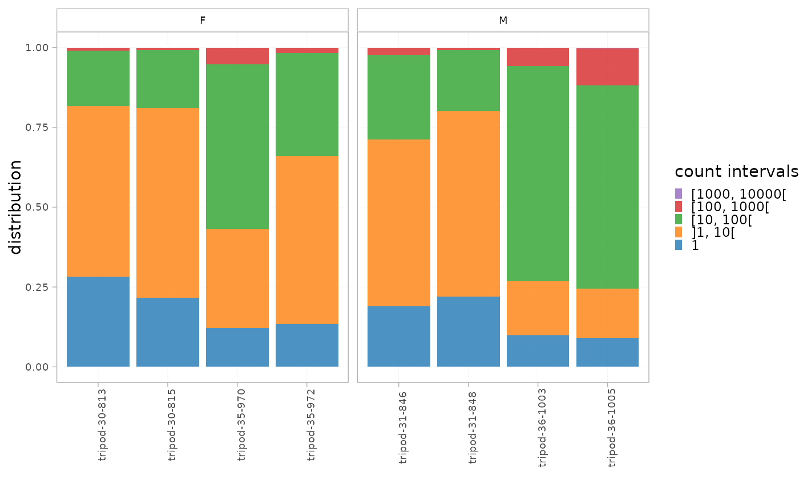
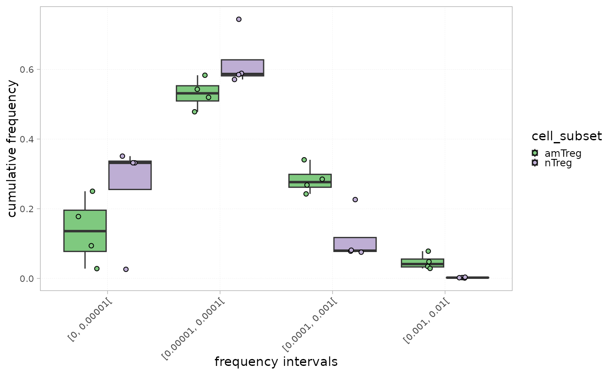

This function plots two histograms of the clonal distribution per a set of intervals in all the samples within the dataset.
The plot titled "Distribution" calculates the proportion of each interval in the whole repertoire, whereas the one titled "Cumulative frequency" shows the cumulative frequency of the sequences within each interval.
This could allow a global view of the repertoire fraction contributing the most to the repertoire. For instance, top sequences belonging to the highest interval often constitute a low fraction of the whole repertoire but contribute more significantly in terms of cumulative frequency in view of their high occurrence.
Samples can be statistically compared in each interval using the groupBy parameter.
Arguments
- x
an object of class
RepSeqExperiment- level
a character specifying the level of the repertoire to be taken into account when calculating the clonal distribution. Should be one of "aaClone","ntClone", "ntCDR3" or "aaCDR3".
- colorBy
a character indicating a column name in mData. Colors are thus attributed to the different groups within this column. The chosen column must be of class factor.
- facetBy
a vector of character indicating one or two column names in mData to apply a facet on.
- label_colors
a list of colors for each variable in ColorBy. See
plotColors. If NULL, default colors are used.- grouped
a character indicating one or multiple groups to be compared. A Wilcoxon test is thus performed and adjusted p-values using the Holm method are shown. Colors are attributed to the different groups within the first column, and a facet is applied on the second column. If not specified, no statistical tests will be performed, and calculated values for each sample_id will be represented.
- show_stats
whether to statistically compare groups using a wilcoxon test
- calculation_type
a character indicating the type of calculation to plot, either the distribution or the cumulative frequency
- interval_scale
whether intervals should be determined in count or frequency
Examples
data(RepSeqData)
plotIntervals(x = RepSeqData, level="aaCDR3",
facetBy = 'sex', interval_scale="count",
calculation_type = "distribution")

plotIntervals(x = RepSeqData, level="ntCDR3", colorBy="cell_subset", grouped=TRUE,
interval_scale="frequency", show_stats=TRUE ,
calculation_type = "cumulative frequency")
#> [1] "Performing Wilcoxon test with Bonferroni correction for 2 groups"
